Before you being this section, navigate to the variant_calling folder. You will use this folder and its contents to learn and practice this section.
Overview
In this section, we will learn how to map sequence reads to a reference sequence and then identify the variants (both single nucleotide polymorphisms (SNPs) and small insertions and deletions (indels)) in the sequence data. We will then use the variants identified to generate a pseudogenome which is created by replacing the bases in reference genome by variants identified at corresponding positions.
Tool(s)
We will use the tool Snippy which is an integrated pipeline that maps reads to a reference genome and finds variants between the reference genome and the sequence reads. It will use as many CPUs as you can give it on a single computer. It is designed with speed in mind, and produces a consistent set of output files in a single folder.
You can snippy from a docker repository using the commands:
docker pull staphb/snippy
Alignment
Snippy requires only three inputs:
- reference genome in FASTA format,
- sequence read file (s) in FASTQ format,
- a folder to put in the results
The following command is used to run snippy:
docker_run staphb/snippy snippy --outdir GPSC46_folder --R1 17150_4#79_1.fastq.gz --R2
17150_4#79_2.fastq.gz --ref Reference_sequence_GPSC46.fa --cpus 2 --ram 2 --force --quiet
An explanation of these commands are as follows:
docker_run: is a function to start a container. The function includes the following flags: docker run --rm=True -u $(id -u):$(id -g) -v $(pwd):/data "$@". To understand the docker_run function read the section [Data, Tools and Computational Platforms (Docker)]
staphb/snippy: is the docker image
snippy: is the tool
--outdir: specified the output directory which is GPSC46_folder
--R1: specifies the first read which is 17150_4#79_1.fastq.gz
--R2: specifies the first read which is 17150_4#79_2.fastq.gz
--ref: specifies the reference genome which is Reference_sequence_GPSC46.fa
--cpus: specifies maximum number of CPU cores to use = 2
--ram: specifies that the RAM is kept under 2 GB
--force: force overwrite of existing output folder
--quiet: no screen output
There should now be a new folder called GPSC46_folder. Now lets
cd to this folder and list ls -alh the content of the directory to
check we have our new files, and also check out their sizes.
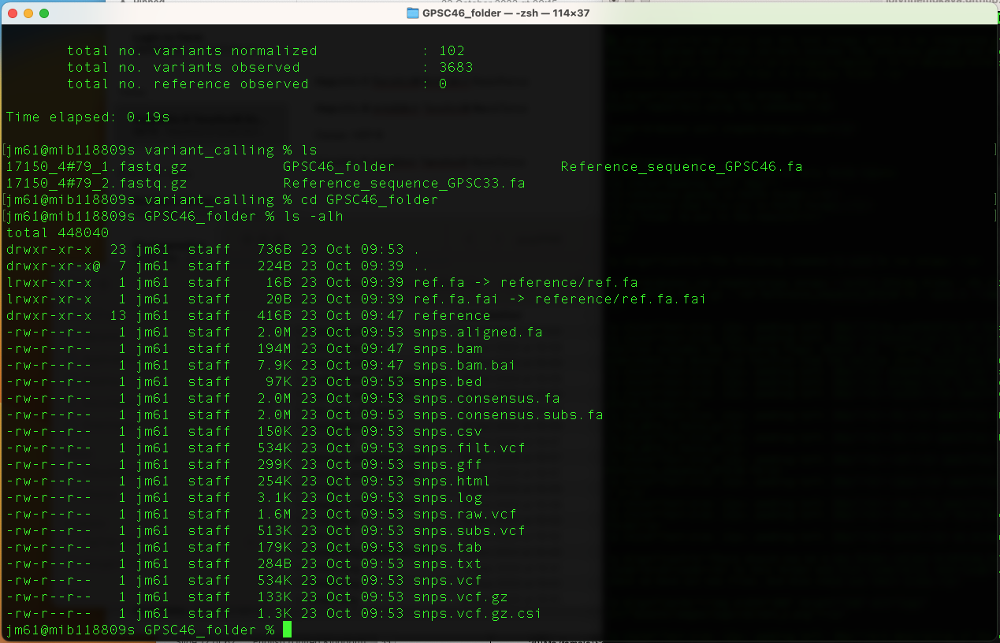
A description of the output files are as follows:
ref.fa: FASTA version/copy of the reference
ref.ra.fai: Index for the reference file
snps.aligned.fa: A version of the reference but with (-) at position with depth=0 and N for 0 < depth < --mincov (does not have variants)
snps.bam: The alignments in BAM format. Includes unmapped, multimapping reads. Excludes duplicates.
snps.bam.bai: Index for the .bam file
snps.bed: The variants in Browser Extensible Data (BED) format
snps.consensus.fa: A version of the reference genome with which contains all contains all high quality variants
snps.consensus.subs.fa: A version of the reference genome which contains only high quality SNPs (no INDELS)
snps.tab: A simple tab-separated summary of all the variants
snps.csv: A comma-separated version of the .tab file
snps.txt: Tab-separated columnar list of alignment/core-size statistics
snps.filt.vcf: The filtered variant calls from Freebayes
snps.raw.vcf: The unfiltered variant calls from Freebayes
snps.vcf: Multi-sample VCF file with genotype GT tags for all discovered alleles
snps.vcf.gz: Compressed .vcf file
snps.vcf.gz.csi: Index for the .vcf.gz via bcftools index
snps.gff: The variants in GFF3 format
snps.html: A HTML version of the .tab file
snps.log: A log file with the commands run and their outputs
Snippy has done a number of things. You can examine the log file to see exactly what snippy has done. So type:
less snps.log
The output is as shown in the table below:
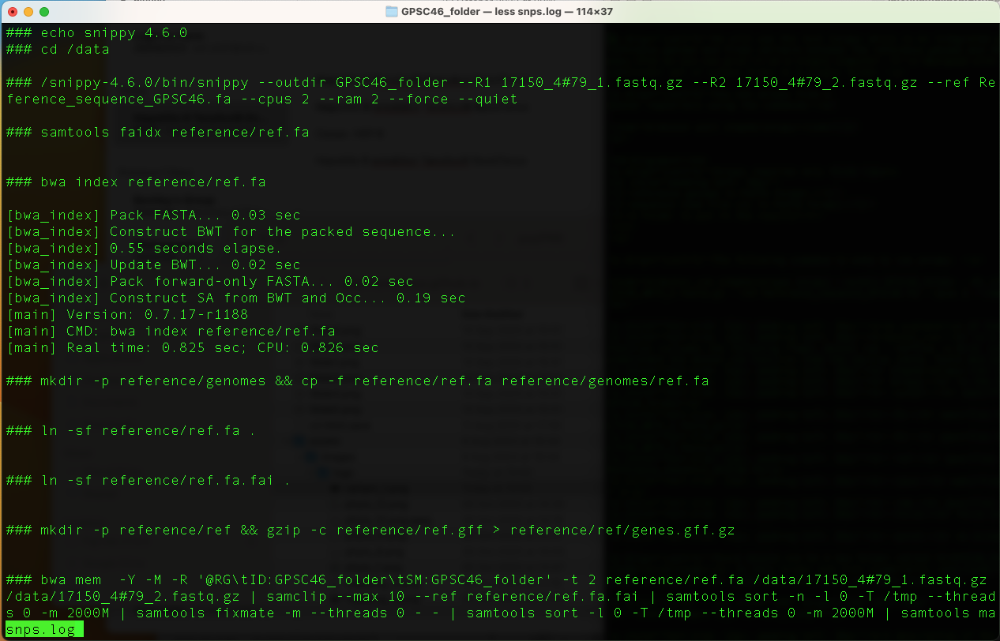
Press "q" to exit.
You can also use grep to retrieve the relevant lines for each
command from the log file.
For example: To see the exact snippy command you entered earlier type the command
grep outdir snps.log
You will get this output
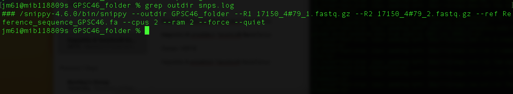
grep bwa snps.log
You will get this output
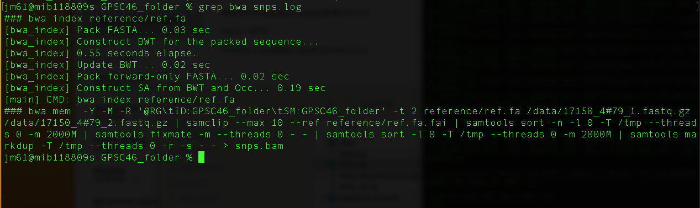
The command "bwa mem -Y -M -R '@RG\tID:GPSC46_folder\tSM:GPSC46_folder' -t 2 reference/ref.fa /data/17150_4#79_1.fastq.gz /data/17150_4#79_2.fastq.gz | samclip --max 10 --ref reference/ref.fa.fai | samtools sort -n -l 0 -T /tmp --threads 0 -m 1000M | samtools fixmate -m --threads 0 - - | samtools sort -l 0 -T /tmp --threads 0 -m 1000M | samtools markdup -T /tmp --threads 0 -r -s - - > snps.bam" is a combination of several commands combined using pipes (|). A description of this command is as follows:
bwa mem -Y -M -R '@RG\tID:GPSC46_folder\tSM:GPSC46_folder' -t 2 reference/ref.fa /data/17150_4#79_1.fastq.gz /data/17150_4#79_2.fastq.gz: This command uses bwa to map the sequence reads to the reference genome using bwa mem.
samclip --max 10 --ref reference/ref.fa.fai: This command uses samtools to clip/remove unaligned reads.
samtools sort -n -l 0 -T /tmp --threads 0 -m 1000M: This command tells samtools to fill in mate coordinates and insert size fields.
samtools fixmate -m --threads 0 - -: This command tells samtools to fill in mate coordinates and insert size fields.
samtools sort -l 0 -T /tmp --threads 0 -m 1000M: This command tells samtools to sort based on chromosome number and coordinates
samtools markdup -T /tmp --threads 0 -r -s - - : This command uses samtools to remove all the duplicates and also print some basic statistics about the results file.
> snps.bam: snps.bam is the outputfile
To see samtools processing type the command
grep samtools snps.log
You will get this output
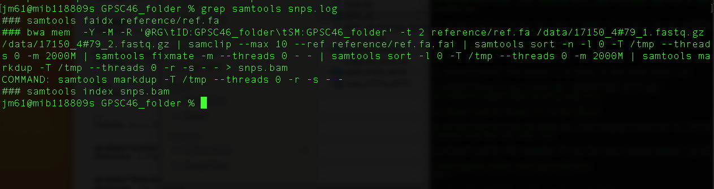
The command "bwa mem -Y -M -R '@RG\tID:GPSC46_folder\tSM:GPSC46_folder' -t 2 reference/ref.fa /data/17150_4#79_1.fastq.gz /data/17150_4#79_2.fastq.gz | samclip --max 10 --ref reference/ref.fa.fai | samtools sort -n -l 0 -T /tmp --threads 0 -m 1000M | samtools fixmate -m --threads 0 - - | samtools sort -l 0 -T /tmp --threads 0 -m 1000M | samtools markdup -T /tmp --threads 0 -r -s - - > snps.bam" has been explained above.
To see freebayes processing type the command
grep freebayes snps.log
You will get this output
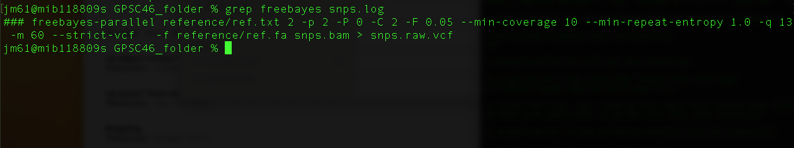
This command uses freebayes to identify potential variants with coordinates in variant call file (VCF) format
To see bcftools processing type the command
grep bcftools snps.log
You will get this output
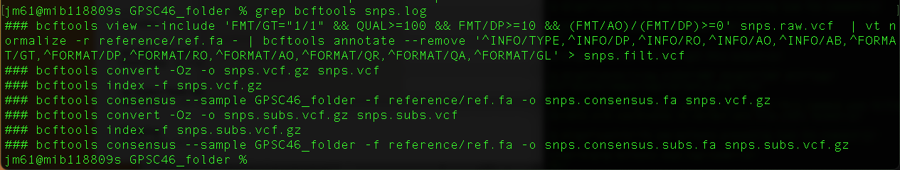
The command bcftools view --include 'FMT/GT="1/1" && QUAL>=100 && FMT/DP>=10 && (FMT/AO)/(FMT/DP)>=0' snps.raw.vcf | vt normalize-r reference/ref.fa - | bcftools annotate --remove '^INFO/TYPE,^INFO/DP,^INFO/RO,^INFO/AO,^INFO/AB,^FORMAT/GT,^FORMAT/DP,^FORMAT/RO,^FORMAT/AO,^FORMAT/QR,^FORMAT/QA,^FORMAT/GL' > snps.filt.vcf uses bcftools to filter the variants identified above using fixed thresholds
The command bcftools consensus --sample GPSC46_folder -f reference/ref.fa -o snps.consensus.fa snps.vcf.gz uses bcftools to create a pseudogenome by replacing the bases in reference genome by the filtered substitutions(SNPs) identified above.
Viewing output
snps.vcf
head -n30 snps.vcf
This command prints the first 30 lines of the snps.vcf file.
The first 27 lines here are ‘headers’ and contain information about what has been done to call the variants, and helps you to interpret what different columns mean. All these lines begin with **"#"**
The last 3 lines are individual variants identified, one per line. Variants columns are labelled **#CHROM POS ID REF ALT QUAL FILTER INFO FORMAT GPSC46_folder**
You will get this output
snps.tab
We can view a slightly easier summary of these variants in the snps.tab file
head -n5 snps.tab
This command prints the first 5 lines of the snps.vcf file. In this file, we have not provided gene information, so only the first 6 columns are relevant.
You will get this output
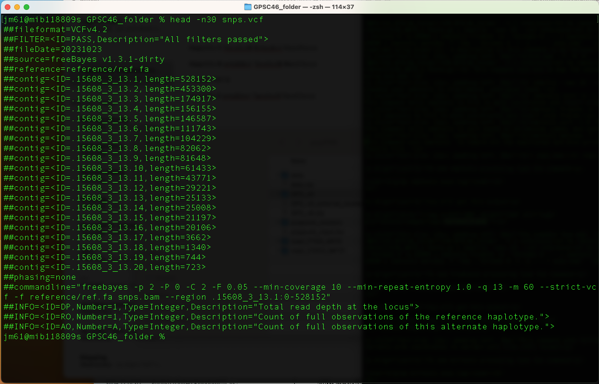
Pseudogenomes
Snippy has also created a fasta file with our pseudosequence genome which is made by replacing the reference bases with the snps identified.
head snps.consensus.subs.fa
This command prints the first few lines of the file "snps.consensus.subs.fa".
You will get this output
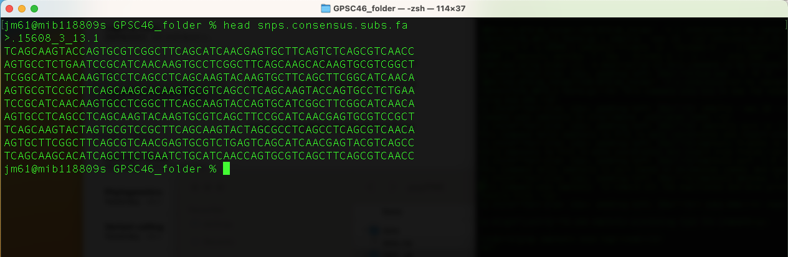
Practice exercise
Now let us perform variant calling for a second genome.
1. There are two additional fastq files in the directory (15608_3#13_1.fastq.gz and 15608_3#13_2.fastq.gz). Now run snippy on this pair of fastqs and name the output directory as “GPSC46_folder2”.
Write the code:
2. Examine the results of snippy in your new folder using grep, ls and less
Handling multiple genomes - creating multiple sequence alignment
Running a set of isolate sequences (reads or contigs) against the same reference, you can use the snippy-multi script.
Navigate to the multiple folder and explore its contents. To execute the snippy-multi script, you will need:
- Paired end reads (single-end reads or assembled contigs)
- Tab separated input file (which contains a list of the forward and reverse reads in the following format: ID, names of R1 reads and names of R2 reads)
- Reference sequence
Explore the tab separated input file; it should have the following format
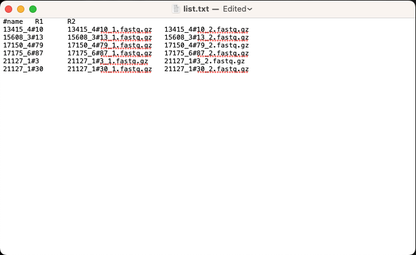
Now lets us use snippy-multi to generate a multiple sequence alignment file.
First run this command to generate an output script
docker_run staphb/snippy snippy-multi list.txt --ref Reference_sequence_GPSC46.fa --cpus 2 >
runme.sh
An explanation of this command is as follows
docker_run: is a function to start a container. The function includes the following flags: docker run --rm=True -u $(id -u):$(id -g) -v $(pwd):/data "$@". To understand the docker_run function read the section [Data, Tools and Computational Platforms (Docker)]
staphb/snippy: is the tool
list.txt: Tab separated input file (which contains a list of the forward and reverse reads in the following format: ID, names of R1 reads and names of R2 reads)
--ref: specifies the reference genome which is Reference_sequence_GPSC46.fa
--cpus: specifies maximum number of CPU cores to use = 2
> runme.sh: is the output script
You will get this output
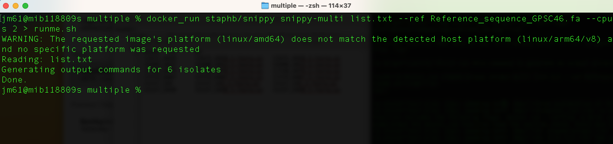
You can check that the script makes sense by running the command:
less runme.sh
You will get this output if the script is correct
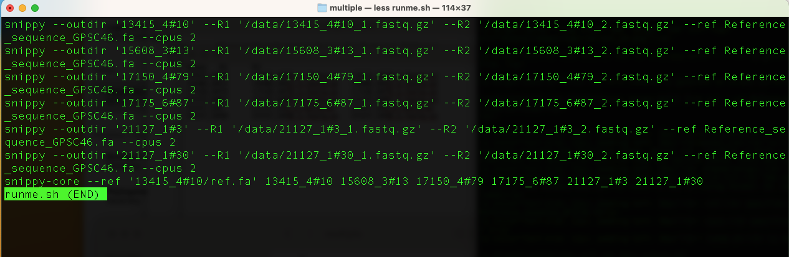
Now, generate the alignment by running the command:
docker_run staphb/snippy sh ./runme.sh
An explanation of this command is as follows
docker_run: is a function to start a container. The function includes the following flags: docker run --rm=True -u $(id -u):$(id -g) -v $(pwd):/data "$@". To understand the docker_run function read the section [Data, Tools and Computational Platforms (Docker)]
staphb/snippy: is the tool
sh: is the command name of the Bourne shell, the standard command language interpreter of Unix and many Unix-like operating systems, including Linux
/.runme.sh: the output script in the current directory (/.)
Note: the tool snippy-multi will also run snippy-core to generate the core genome SNP alignment files core.*
Snippy has now created a number of files, including a ‘core SNP alignment’
Run this command to check output
ls -l core.*
An explanation of this command is as follows
ls -l: is the command for long listing all items with core as prefix (core.*)
You will get this output
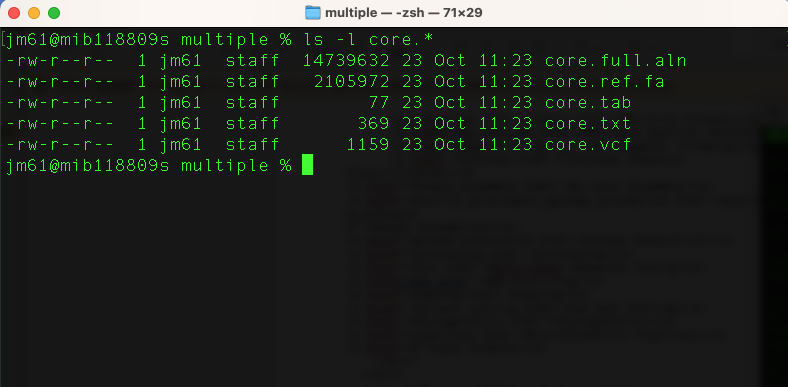
Viewing output
We have various files that summarise our variants, e.g., run this command to check the content of some these files:
head core.tab
You will get this output

And our multiple sequence alignment containing all genomes is in the file (core.tull.aln). View this file:
head core.full.aln
You will get this output
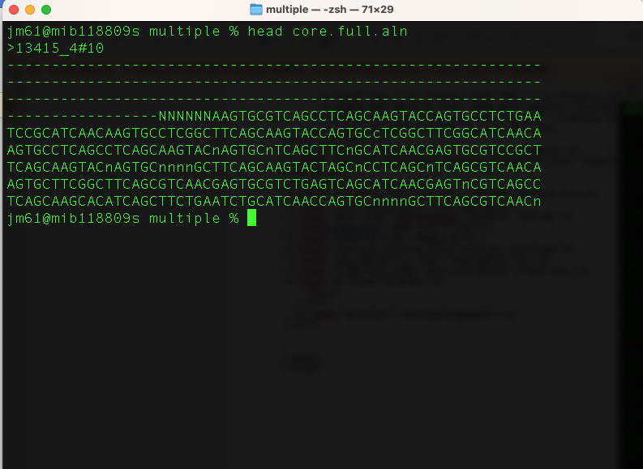
This file “core.full.aln” masks sequences with low confidence in different ways, but for some applications we want everything masked in the same way. Let’s change that so anything uncertain is marked as ’N’ using the snipp-clean_full_aln script that comes with snippy.
docker_run staphb/snippy snippy-clean_full_aln core.full.aln > clean.full.aln
View this file:
head clean.full.aln
You will get this output
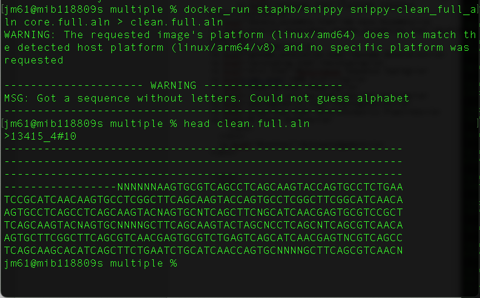
Practice exercise
Now let us perform variant calling for Streptococcus agalactiae. Move to the S.agalactiae folder which is in the Variant_calling folder. Run snippy on this pair of fastq files (20280_5#33_1.fastq.gz and 20280_5#33_2.fastq.gz) and name the output directory as “gbs_folder”. There is a multiple folder within the directory - now run snippy on these reads.
Write the code:
Examine the results of snippy in your new folder using grep, ls and less
Generate multiple sequence alignment
Further reading: Snippy